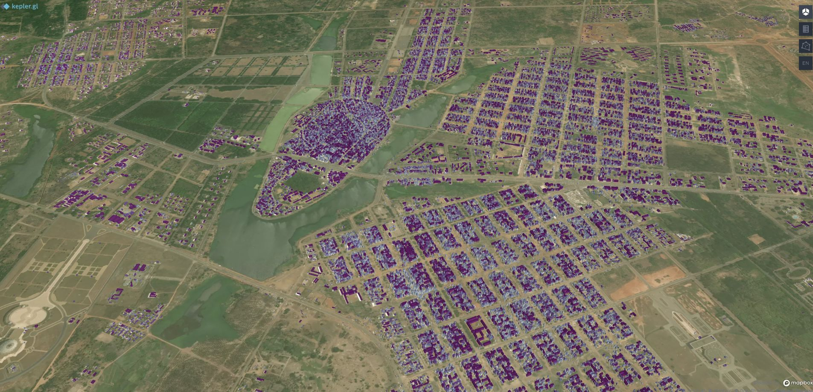

Mamadou KROUMA
Geospatial Specialist | Data Scientist | Learner.
Geospatial Specialist, I have more than +5 year of experience working for startups and doing projects around the globe.
I'm currently working at Satelligence (startup) where I do technical support for clients in West Africa, data analytics and learningmore about agricultural industry.
I'll be happy to follow you and your team in your development around geospatial, startup, marketing, technical writing.
Work Experience
Geospatial Specialist
Satelligence, 2/21 - Present
As an operator, I help the operations team verify alerts,
publish them and deliver messages to customers.
I mainly take care of customers in Africa, make sure they are well
integrated and coordinate the technical support.
Beyond that, I use my development skills to work on analytics
and reporting projects before going live in the platform.
This involved data exploration, science, reporting and development
of new solutions.
Technical Skills: QGIS, Python
Remote sensing & ML
Spacesense.ai, 6/20 - 12/20
Work on the development of two products including the detection of
soil properties and false NDVI from radar images;
Satisfactory research and development with test scores of at least 80
percent on each product;
Last project was sanctioned by an abstract presented at the EGU2021 conference by my manager,
.
Technical Skills: Pandas, Geopandas, Xarray, Scickit-learn, Linux, GCP
Projects
Yakro3D
Digital twin, a buzzword.
It's a real mapping of the city. Which in addition to a 3D model, will update itself according to events such as energy loss, water supply problems and so on.
To achieve this, there is a first layer. The 3D representation of the city of Yamoussoukro. Yamoussoukro is a town you'll want to visit, with its air of history, grand streets and Notre Dame de la Paix basilica. It's a haven of rest and peace.
Imagine a 3D representation of your city, without lifting a finger or a foot. Without a large and expensive data acquisition campaign. Of course you will lose a little bit of accuracy but still ? Here is the object of my project for the weekend (2 days) of 18 and 19 June 2022. I represented in 3D the city of Yamoussoukro.
Dataset : Google Building footprint [2021] and Gbobal Human Settlements Layers [2018].
Technical Skills: Pandas, Geopandas (Python), QGIS, Kepler.gl, AWS S3.
Paris 2wheels
Predict dangerous hotspot for 2 wheels users in Paris.
I worked on this project with Gabriel and Riadh, our classmates at Jedha Bootcamp. We decided to do signage and geofencing to improve the safety of two-wheelers in Paris.
Workflow: data acquisition, data exploratory, model training and testing, application development, model on prod and Jedha demo day.
Technical Skills: Flask, Scikit-learn, Geopandas

Food recommendation
Food recommendation system using machine learning and open source dataset.
The year 2021 has been a full year for me. Between my great tasks at Satelligence, my bootcamp at Jedha and my various freelance and personal projects, I've learned a lot. In this sense, I decided to put all this knowledge into practice on an end-to-end project. I'm working on a project to recommend food to users based on the knowledge about the user (constant), his criteria at the moment (variable) and the scores provided by similar users.
Technical Skills: Python, Linux, Docker, Scikit-learn(ML), RDS, ECR, EC2, S3(Cloud), SQLAlchemy(DBMS)
Webscrapping
I've been working on a webscrapping project for 3 months now. Of course it's private. I'll share here only the workflow and the skills learned. It was simply a matter of retrieving data from a site in a continuous way.
So I developed a python application. First of all it was pure scrapping development using mainly beautifulSoup.
Then, it was necessary to go from a local solution to a general solution in production. On one hand, I containerized the application since the client was working on Windows and I was working on Mac (Unix). On the other hand, I opted for a cloud solution as the application was not running for the client and the Docker volumes were not well set up (still a beginner).
Finally, I deployed the solution on the AWS cloud with the Elastic Bean Stalk service. The scrapping is in production and uploads every morning the data in the associated S3 bucket. I also had fun doing due sysadmin by connecting to my server (SSH) manipulating, transferring data (FileZilla) and others stuff.
Technical Skills: Python app, Linux, Docker, GitHub Actions, Pylint-Pytest
Workflow : scrapping of a website, adding a scheduler, application in docker image, deploy on AWS Bean Stalk.